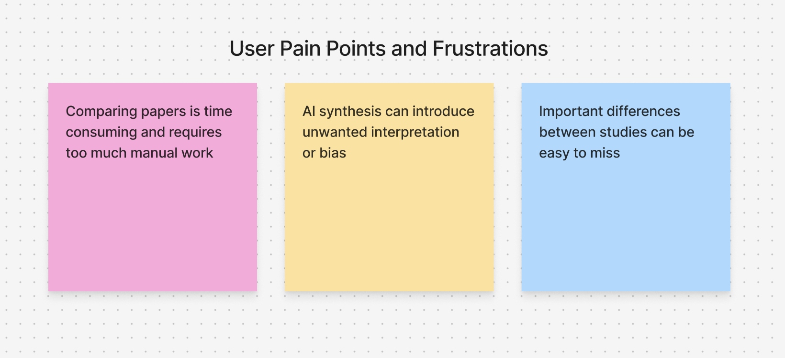
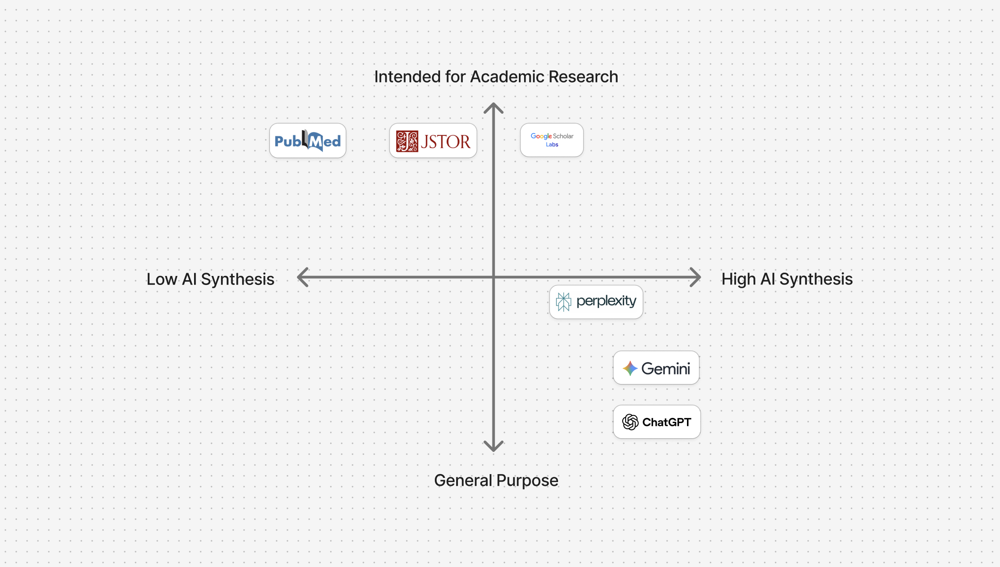
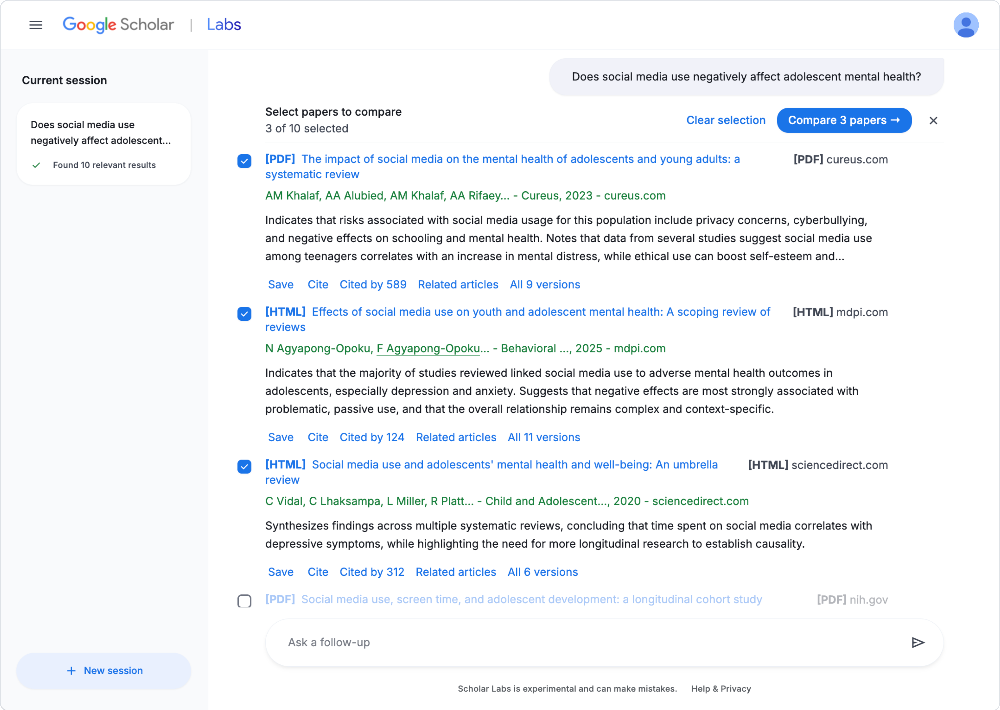
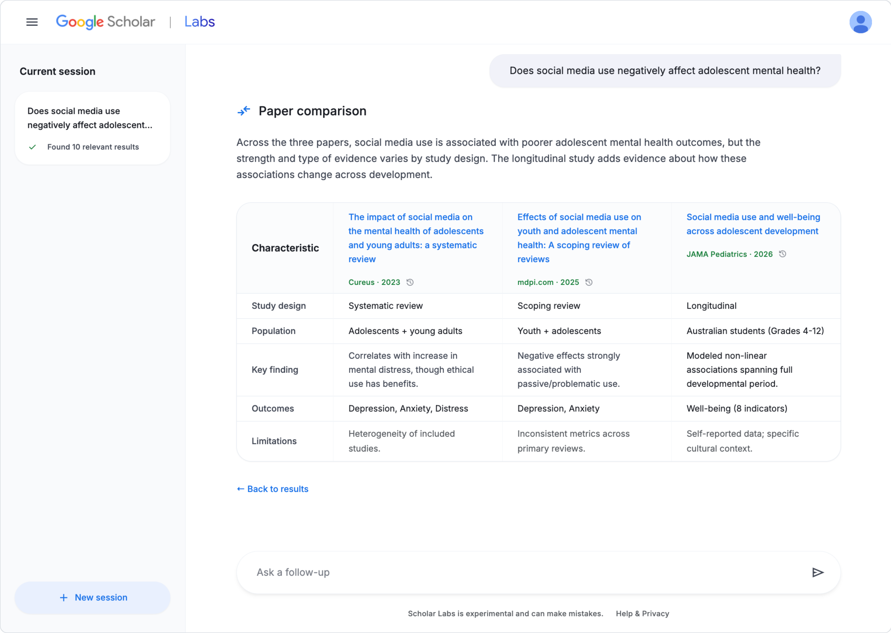
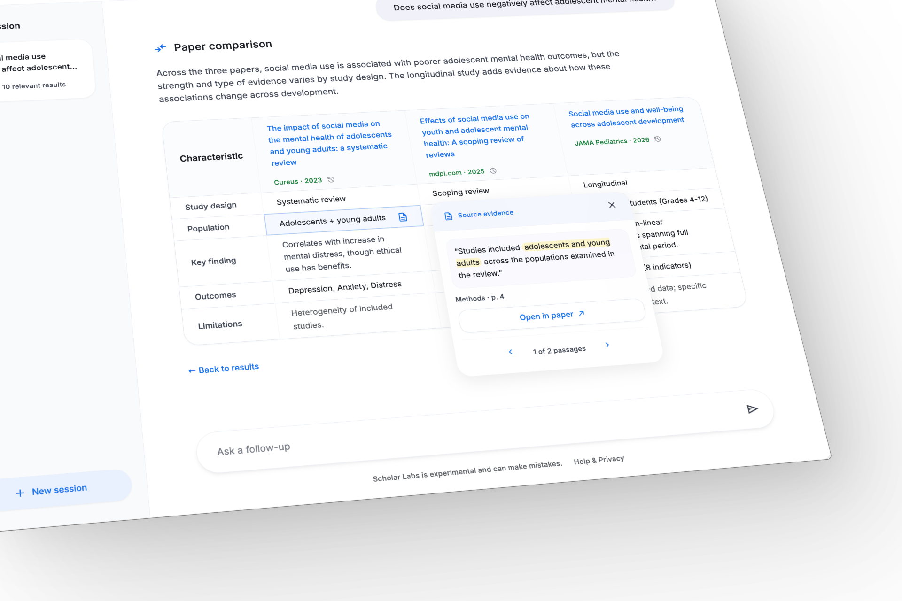

spent extracting study data on average
Observed during a systematic review that tracked researcher time across each stage of the review process.¹
Designing an AI-assisted comparison feature that helps researchers identify differences across multiple studies with greater confidence.
Google Scholar is the industry standard for discovering academic literature, tracking citations, and exploring related research. Google's new AI feature called Scholar Labs extends this experience by enabling users to query complex research questions and surface contextually relevant papers, while features like Quick Read optimize individual paper comprehension.
These features help users find and understand individual papers, but comparing multiple studies still requires significant manual work. This creates an opportunity to help researchers evaluate relevant studies more efficiently.
How can we help researchers effectively evaluate differences in study characteristics across multiple papers without compromising source integrity or independent interpretation?

To better understand the effort involved in comparing research across multiple papers, I analyzed systematic reviews that tracked time spent selecting, extracting, and evaluating studies.
Observed during a systematic review that tracked researcher time across each stage of the review process.¹
Observed while researchers tracked time spent across individual stages of a systematic review.¹
Across 12 simulated systematic reviews designed to measure the workload of each review stage.²
Together, these findings show that identifying relevant papers still leaves substantial work in extracting and evaluating information across studies.
I explored four different product directions for reducing the effort involved in reviewing multiple studies:
| Product Direction | Potential Benefit | Strategic Trade-off | Verdict |
|---|---|---|---|
| More Detailed Results | Adds context directly during search | Clutters search results and reduces scan efficiency | Rejected |
| AI Synthesis | Lowest immediate cognitive effort for the user | Merges studies into a single answer, obscuring individual study nuances and adding unwanted AI bias | Rejected |
| Research Workspace | Supports the broader end-to-end review lifecycle | Expands scope far beyond Scholar Labs' core search-centric workflow | Rejected |
| Structured Comparison | Makes cross-study differences immediately visible while keeping studies separate | Requires users to actively select papers | Selected |

I selected Structured Comparison to differentiate Scholar Labs from broad, general-purpose chatbots like Gemini and Perplexity while reducing reliability risks. The feature uses AI to organize information across papers without drawing conclusions, limiting the potential for bias or misinterpretation while leaving interpretation to the researcher.
The MVP integrates seamlessly into the existing Scholar Labs search experience:


Because automated data extraction in academic research has documented error rates ranging from 8% to 63%, relying on extracted information without verification poses a reliability risk.³
To address this, I implemented a Source Evidence feature so users can inspect the exact supporting text passage underlying any extracted field, with a direct link back to the original paper.

Test extraction across disciplines and study designs with internal researchers and product teams. Track missing, misclassified, and unsupported fields to identify failure patterns before external testing.
Release structured comparison as an opt-in feature to a limited group of graduate students, researchers, and systematic reviewers. Add lightweight feedback within the comparison view and let users flag extractions that do not match the supporting passage.
Run an A/B test to measure whether structured comparison helps users identify key differences across papers faster without reducing accuracy:
Control: Existing Scholar Labs experience
Variant: Multi-paper selection + Structured Comparison + Source Evidence
Primary metric: Time to correctly identify key differences across papers
Guardrail: Accuracy of identified differences
Start with 5% of eligible users, then expand to 25%, 50%, and 100% if comparison time improves without reducing accuracy. Monitor extraction-error reports and latency throughout the rollout.
I would measure whether researchers can correctly identify key differences across papers faster, with accuracy as the guardrail. Extraction errors, Source Evidence usage, and comparison completion would help identify where the experience needs improvement.
Early on, I focused on how AI could reduce the work of reviewing multiple papers. As I evaluated different directions, I realized that more AI-generated synthesis could make research faster while making it harder to see where conclusions came from. That shifted the MVP toward structured comparison, where AI helps organize the evidence but researchers remain responsible for interpreting it.
The 2-4 paper limit and five comparison fields are still assumptions. Testing would determine whether that scope gives researchers enough context without making the comparison harder to use.